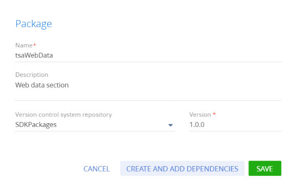
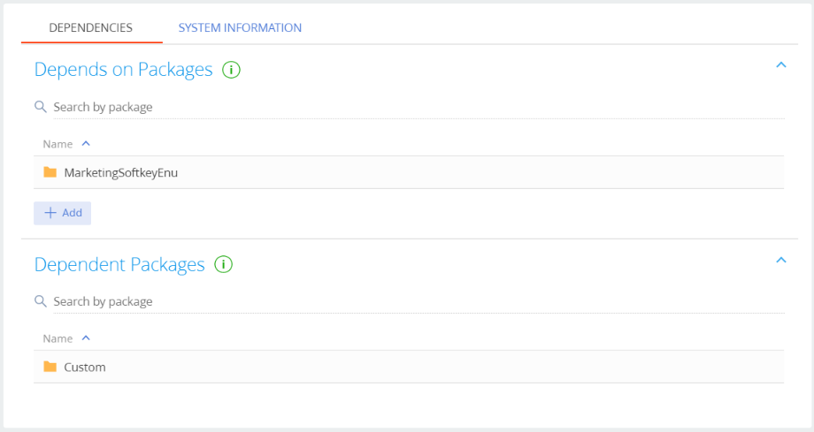

Приложение для Creatio Marketplace, в котором реализован пользовательский раздел, практически ничем не отличается от разработки обычного проектного решения создания пользовательского раздела.
Для создания пользовательского раздела необходимо использовать мастер разделов. Все схемы, создаваемые мастером разделов, сохраняются в пакет, который указан в системной настройке Текущий пакет (CurrentPackageId). По умолчанию текущим пакетом является пакет Custom.
Однако, если изменения необходимо переносить в другую среду, то вести разработку в пакете Custom нельзя. Это связано с тем, что сам пакет Custom является системным пакетом, следовательно, его нельзя экспортировать ни с помощью утилиты WorkspaceConsole, ни с помощью SVN.
Поэтому всю разработку новой функциональности следует вести в пользовательском пакете.
Последовательность создания приложения с пользовательским разделом:
- Создать пользовательский пакет.
- Установить значения системных настроек Текущий пакет и Префикс названия объекта для разработки в пользовательском пакете. Значение системной настройки Префикс названия объекта должно соответствовать префиксу, указанному в Кабинете разработчика.
- С помощью мастера разделов создать раздел.
- Реализовать необходимую функциональность раздела.
- Привязать к пользовательскому пакету все необходимые данные, относящиеся к разделу.
1. Создать пользовательский пакет
- Перейдите в дизайнер системы по кнопке
 .
. - В блоке Конфигурирование разработчиком (Admin area) перейдите по ссылке Управление конфигурацией (Advanced settings).
- В области работы с пакетами нажмите кнопку
 .
. - Заполните свойства пакета:
- Название (Name) — "tsaWebData".
- Описание (Description) — "Раздел веб-статистика" ("Web data section").
-
Хранилище системы контроля версий (Version control system repository) — название хранилища системы контроля версий, в котором будут фиксироваться изменения пакета (обязательное свойство). Хранилища, которые находятся в перечне хранилищ конфигурации, но не помечены как активные, не попадут в выпадающий список доступных хранилищ.
- Версия (Version) — "1.0.0".
 -
Чтобы текущий пакет наследовал функциональность приложения, необходимо определить зависимости пакета.
Чтобы добавить зависимости пакета:
- В карточке пакета нажмите кнопку Создать и добавить зависимости (Create and add dependencies).
- На вкладке Зависимости (Dependencies) в детали Зависит от пакетов (Depends on packages) установите необходимые зависимости. Поскольку по условию примера необходимо добавить раздел в рабочее место Маркетинг, то необходимо добавить зависимость от пакета MarketingSoftkey (MarketingSoftKeyEnu).

2. Установить значения системных настроек Текущий пакет и Префикс названия объекта
Для того чтобы мастер разделов сохранил связанные с разделом схемы в пользовательский пакет, следует указать этот пакет в качестве текущего. Для этого необходимо в дизайнере системы перейти в раздел Системные настройки, открыть системную настройку Текущий пакет и в поле Значение по умолчанию выбрать из справочника пакетов необходимый пользовательский пакет.
Затем системную настройку необходимо сохранить.
Также необходимо установить указанное в профиле разработчика значение для системной настройки Префикс названия объекта.
Этот префикс будет автоматически добавлен мастером к названиям всех схем, которые он создаст.
3. Создать раздел с помощью мастера
Для нового раздела в мастере необходимо указать значения для следующих свойств:
- Заголовок — "Web-данные". Заголовок отображается в главном меню приложения и на странице раздела.
- Код — "tsaWebData". Это название схемы объекта раздела.
- Рабочее место — "Маркетинг". Рабочее место, в котором будет отображен раздел.
Исходя из условий примера, на странице записи раздела необходимо создать поле для ввода названия URL сайта, для которого будет отображена статистика. Для этого можно использовать колонку Название, создаваемую мастером по умолчанию (1). Также нужно добавить вспомогательное поле (2), в котором будет храниться создаваемая программно ссылка на страницу статистики Web-сайта https://www.similarweb.com для введенного URL. Эта ссылка будет присваиваться атрибуту src элемента <iframe>, размещенного на странице. Для размещения элемента <iframe> необходимо добавить новую вкладку Web-данные (3) на панель вкладок.
После нажатия на кнопку Сохранить мастер создаст все необходимые схемы в пакете и сохранит результаты в базу данных.
4. Реализовать необходимую функциональность раздела
Созданный при помощи мастера раздел уже имеет всю необходимую функциональность по добавлению, удалению и сортировке записей. Также в схеме страницы записи уже унаследована вся функциональность, необходимая для сохранения и загрузки основных данных записи.
Для формирования ссылки на страницу статистики, отображаемой в поле URL, необходимо добавить кнопку. Для добавления кнопки используется конфигурационный объект, добавляемый в массив diff модели представления страницы. Заголовок кнопки связан с локализируемой строкой AddUrlButtonCaption. Событие click нажатия кнопки нужно связать с методом addUrl(), в котором формируется ссылка на страницу статистики и устанавливается новое значение для колонки tsaURL, связанной с полем URL страницы записи. Также эта ссылка присваивается атрибуту src элемента <iframe>.
Элемент <iframe> добавляется на созданную мастером вкладку также с помощью конфигурационного объекта, добавляемого в массив diff. В свойстве html конфигурационного объекта формируется html-элемент <iframe> с заданием нужных стилей. При этом атрибут src не указывается, поскольку он формируется программно в методе addUrl(). Для того чтобы в элементе <iframe> данные восстанавливались после переключения на другую вкладку, необходимо связать событие afterrerender перерисовки контейнера, содержащего элемент <iframe>, с методом addUrl().
После открытия сохраненной записи, событие afterrerender отрисовки контейнера с элементом <iframe> наступает, как правило, раньше полной загрузки данных. Поэтому метод addUrl() следует также вызвать в методе-обработчике события загрузки данных onEntityInitialized().
Полностью исходный код схемы модели представления страницы записи представлен ниже.
После сохранения схемы, на странице записи раздела Web-статистика появится кнопка добавления URL и элемент <iframe>, в котором будет отображаться статистика по введенному Web-ресурсу.